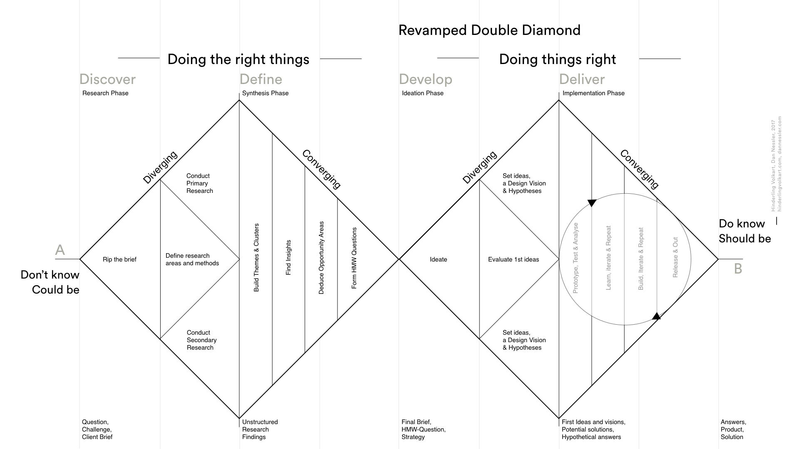
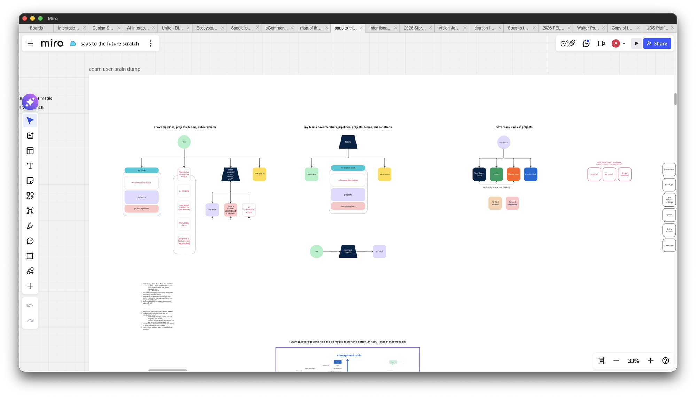
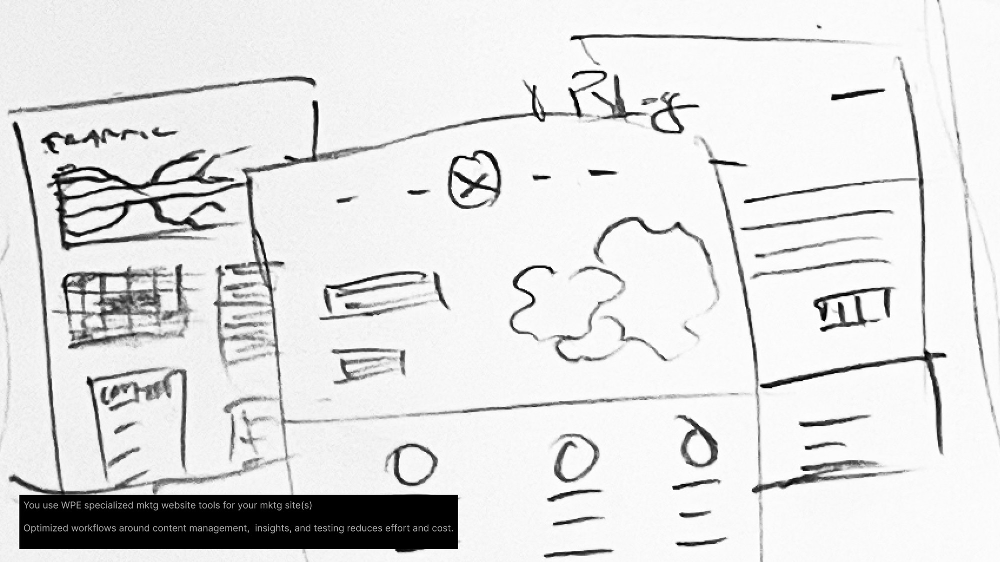
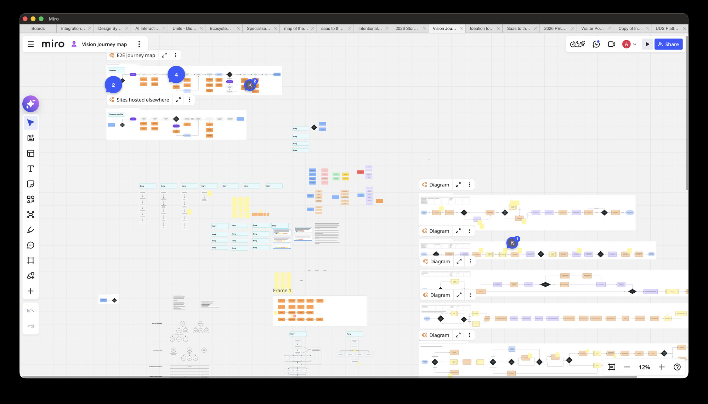
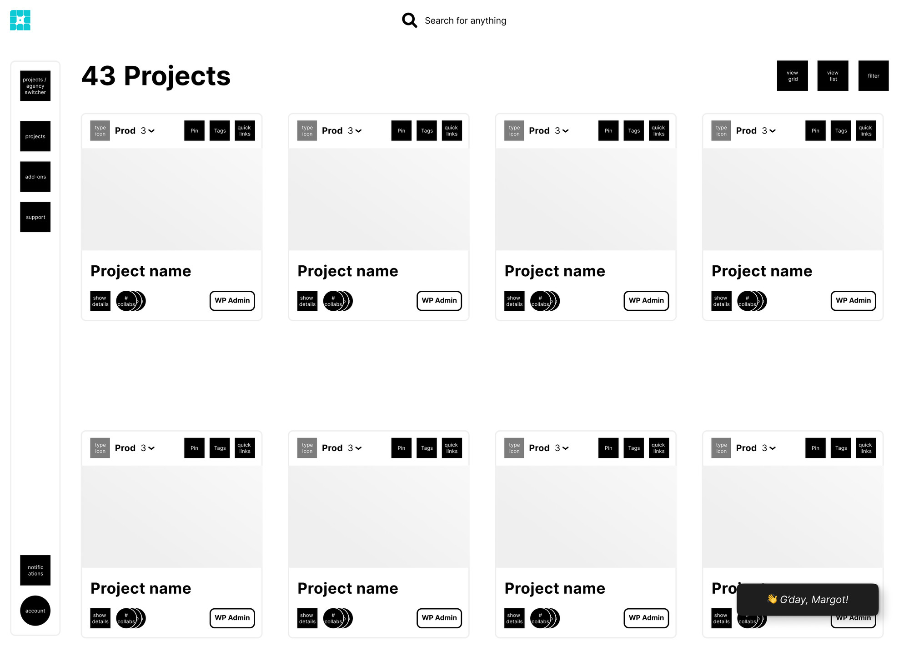
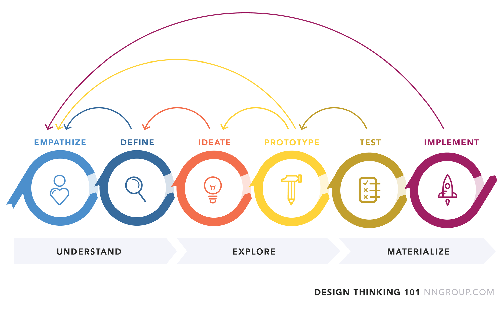
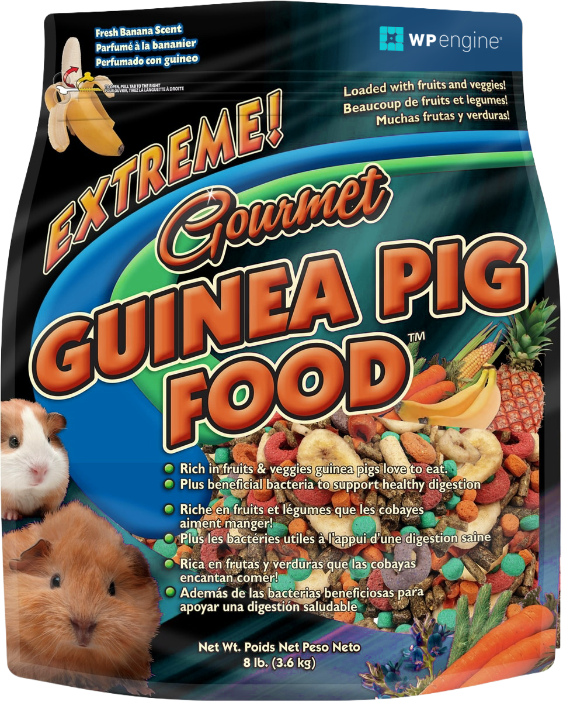

1 / 14
Q3 2026
The Fundamentals
of the
Future
On
first principles






This is
not design
"Design is a
process
of making dreams
come true
"
— the universal traveler
Delivering the
future is
hard
Our processes
have to
adapt
Same as it ever was
01
Solve the actual problem.
02
Build resilient systems.
03
Have opinions and drive vision.
Guinea pigs
can't use
computers

Design is not a
math problem
Doing the right thing,
together
Alignment
is
the work
Are we delivering our
customers' dreams?
Our
work
is the
product
Move forward
with
intention